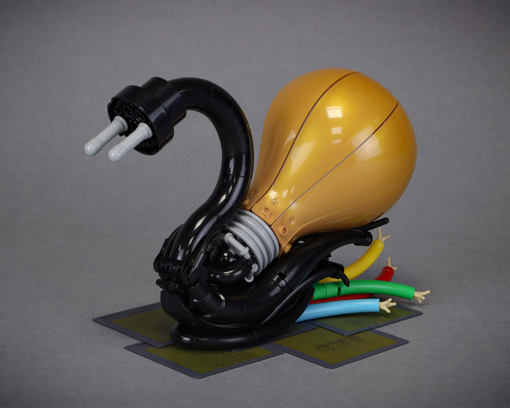
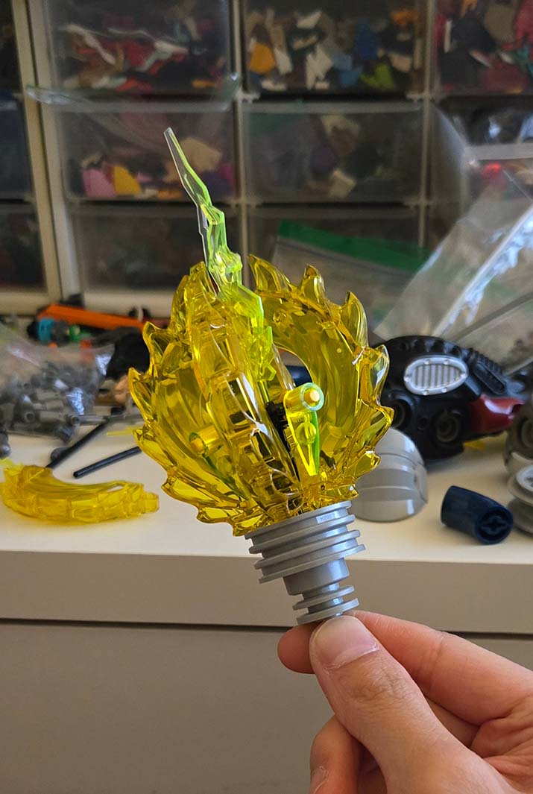
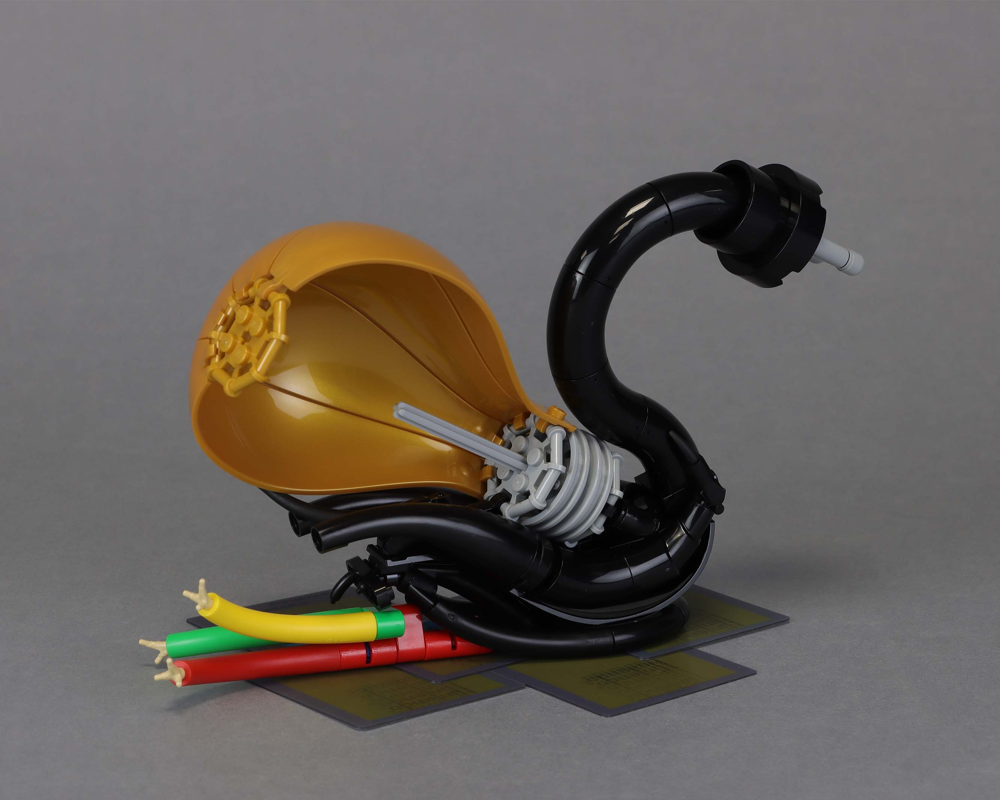
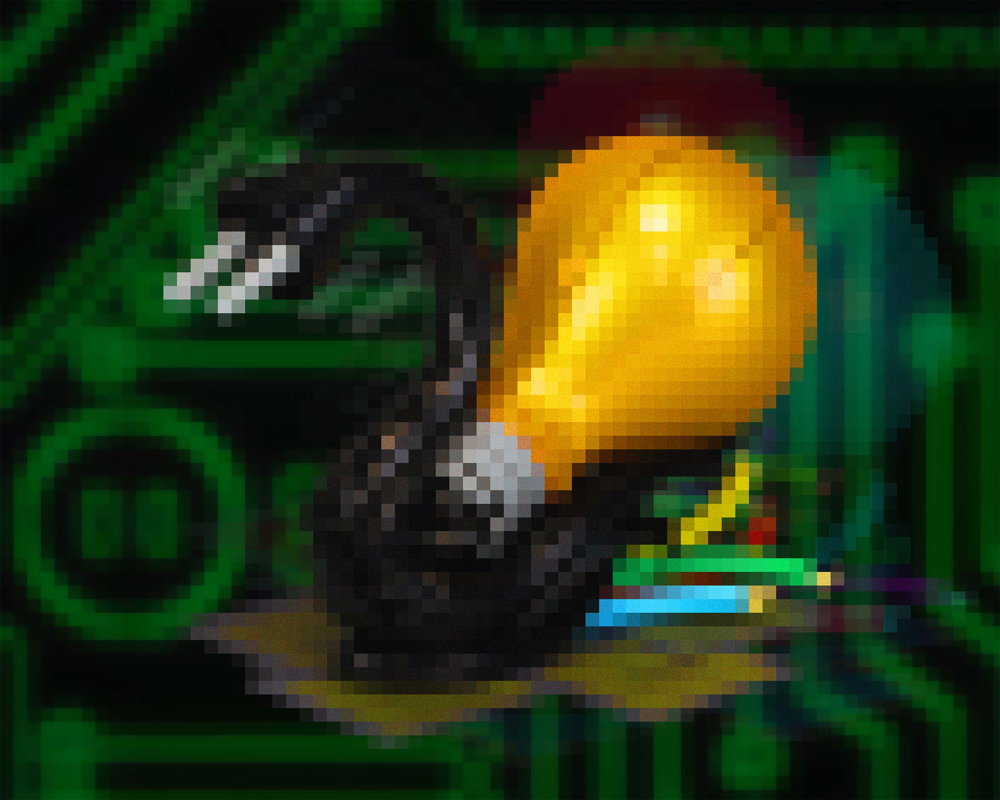
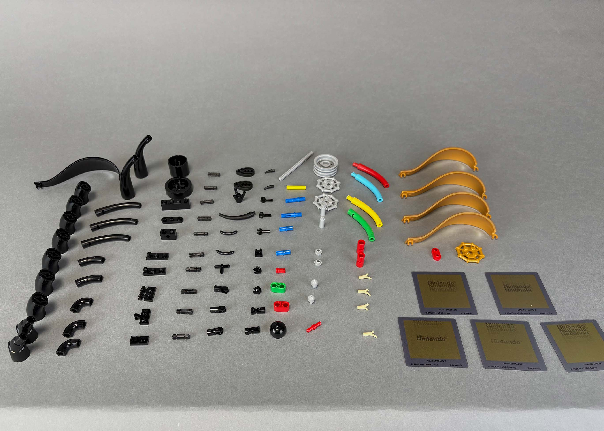

impedance

Another tricky week. Not so much the theme "spark" being difficult but rather myself being a bit busy and uninspired. However, I really want to try and complete all 8 rounds this year, so here's a build for week 6.
concept
I settled on a pretty generic take on the theme with something electricity related. While I had a few other ideas, this interpretation felt the most open in terms of directions I could explore (ex: high fantasy, sci-fi, or realistic electricity characters). I started by trying to build a lightbulb, with the idea to do some sort of insect/arachnid with the lightbulb as an abdomen. I had the dragons rising ninjago spinner effects that gave off a nice energy effect. However, I was quite worried as to whether this would read as an electrified lightbulb as opposed to something like a thruster or exhaust. After asking a few friends and getting mixed results, I began considering alternative directions to go in.

early wip
my snail eats lighbulbs
I didn't want to ditch the lightbulb idea entirely as that was my main connection to the theme. Unfortunately, the insectoid/arachnid idea was proving a bit too difficult for 101 pieces. I had made a head design in the form of a European electrical plug (it's the simplest plug with the part limit) but could not think of a leg design that would a) fit in with the other electrical components and b) was low in part count since it needed to be replicated potentially 4-8 times.
With the legs causing me issues, I decided, "what if I just remove the legs?". The model at this point looked like a snake, but the European plug started to remind me of snail antennae. From here, the idea sort of settled in of a snail made of wiring, and the snail slime being frayed wire. It's pretty reminiscent of Hydralligator, almost as if these two could exist in the same universe. Of course, with the part limitation, I cut a few corners that you can see in the alternate side. The frayed wire section is actually a separate assembly that isn't connected to the main body.

okay, it's half a lightbulb
the end
I built this in about 2.5 hours after work this week. Pretty surprised with how it turned out honestly. It really borrows the Hydralligator DNA but compressed down to 101 pieces.

